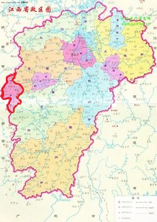
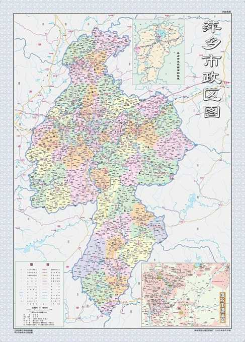

My Hometown
家乡介绍
风景人情
人文风俗
美食
萍乡简介：
萍乡，江西省下辖设区的市（地级），长江中游城市群重要成员，位于江西省西部，东与宜春市、南与吉安市、西与湖南省株洲市、北与湖南省浏阳市接壤；地貌较为复杂，属亚热带湿润季风气候区，四季分明；辖3县、2区，总面积3823.99平方千米；2018年末常住人口193.32万人。2018年，萍乡市实现地区生产总值（GDP）1009.05亿元，比上年增长8.7%。萍乡是江西的“西大门”，在赣西经济发展格局中处于中心位置，素有“湘赣通衢”、“吴楚咽喉”之称。萍乡处于长株潭经济圈的辐射核心区域，同时接受泛珠三角经济区和闽东南经济区的辐射。境内沪昆铁路横穿市内腹地与京广、京九两大动脉相连。319和320国道呈十字型在市区交汇通过，沪昆高速、萍洪高速贯穿全境。市中心城区距湖南长沙黄花机场仅120千米，具有优越的区位地理条件。(左图为萍乡于江西位置，右图为萍乡地图。)


（点击右图可进入萍乡的百度百科。）